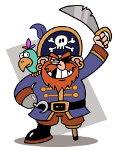

class: center, middle <!--- Don't delete anything before me, Daniel!!! --> # our presentation about Pirates ##by Daniel 3SL and Grace 4FM --- ## stories about Pirates In storybooks,pirates would do anything to get 'their' treasure, and pirates were feared at that time so, nobody took it back. Here are some examples of storybook pirates: * captain hook * the pirates next door  --- # Real pirates Do you know about REAL pirates? Here are some questions about them: Who was the most sucsesful female pirate? Who was the most feared pirate? Where did pirates sleep? <!--- Don't delete anything after me, Daniel!!! -->